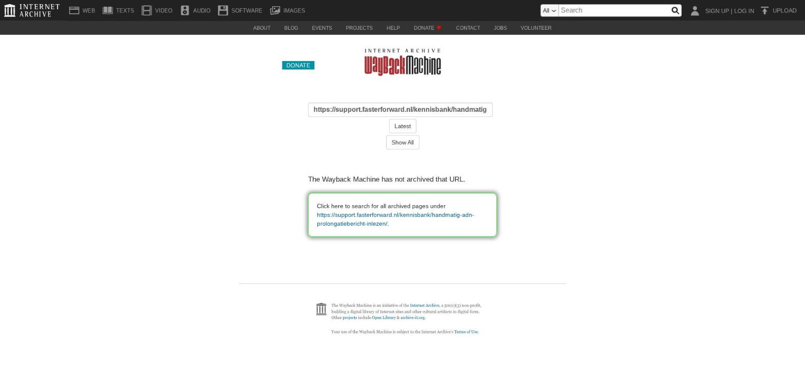

Urenregistratie in het personeelsdossier

Tekstinhoud
Urenregistratie in het personeelsdossier
Het is mogelijk om vanuit het personeelsdossier een urenregistratie bij te houden. Hieronder lees je meer over de voorwaarden en wat je moet instellen.
Voorwaarden
Voor het verwerken van de urenregistratie is een personeelsdossier nodig met ten minste één lopende arbeidsovereenkomst. Daarnaast moet aan die arbeidsovereenkomst het genereren van de urensheets worden gekoppeld. Wanneer je hiermee gaat starten, stuur je een aanvraag naar support-eblinqx@blinqx.tech voor het aanzetten van rechten. Vermeld hierbij dat je de personeelsdossiers wilt inrichten voor de urenregistratie.
Personeelsdossier inrichten
Er is een personeelsdossier nodig met ten minste één lopende arbeidsovereenkomst. Hier lees je hoe je en dossier kunt aanmaken. Let op: het is belangrijk dat bij het koppelen van de persoon kiest voor de persoon waaraan het gebruikersaccount gekoppeld is. Doe je dit niet dan krijg je lege urensheets.
Arbeidsovereenkomst aanmaken
In het dossier maak je een arbeidsovereenkomst aan. Dit doe je via de knop 'Nieuw product'. Deze is te vinden onderaan de pagina via het tabblad Dashboard. Vervolgens kies je voor Arbeidsovereenkomst.
Je vult eerst links de verplichte velden in en je slaat op. Daarna vul je minimaal alle verplichte velden in aan de rechterkant.
Urensheets aanmaken
Zodra de arbeidsovereenkomst is aangemaakt, kan je de urensheets aanmaken. Hiervoor ga je naar het tabblad Urenregistratie – Instellingen. Je klikt op het plusicoon om de urensheet aan te maken.
Urensheet
Onder het tabblad 'Algemeen' vul je de velden in en je slaat op met het opslaanicoon. Let op: vanaf de startdatum worden de urensheets aangemaakt.
Verlof instellingen
Onder het tabblad Verlof instellingen kan de manager de aangevraagde verlofuren invullen en bijhouden. Per registratie type is aan te geven hoeveel een medewerker te besteden heeft aan uren. Iedere keer dat een medewerker boekt op dit type zal dit van het saldo afgaan. Uiteraard nadat de manager dit heeft goedgekeurd.
Rooster instellingen
Onder het tabblad Rooster instellingen kan de manager het weekrooster van de werknemer invullen. Je kunt voor een template kiezen. Wanneer je een template selecteert wordt het deel eronder automatisch gevuld. Dit zijn de uren die in de urensheet naar boven komen als te boeken uren. Een template maak je aan via Beheer – Urenregistratie – Werktijden beheer.
Verlof rooster
Hier is voor de manager een overzicht van de opgenomen dagen. Je kunt filteren op het verloftype en jaar.
Uurtarieven
Wanneer er gebruik gemaakt wordt van de facturatie voor uren kan hier aangegeven worden welke
activiteit welke kostprijs heeft. Dit is een aparte inrichting en staat los van de uren/verlofregistratie. Hier lees je er meer over.
Urensheets inzien
In het tabblad Urensheets kan de manager de sheets van de werknemer terug te vinden. De
status van de sheets wordt aangegeven met een kleur. De betekenis van de kleur staat aangegeven.
Met het pijltje vooraan de regel kan de workflow verder gezet worden. Wanneer je op de regel klikt, kom je in de sheet van die week.
Uren registeren
Vanuit een klantdossier kan de werknemer zijn tijd registreren. Daarvoor maak je een registratie aan. Deze kan direct onder een taak of product aangemaakt worden of je maakt deze op dossierniveau aan. In deze registratie vink je de 'Urenregistratie' aan. Standaard staat deze op 'normaal'. Het kan zijn dat in geval van
speciaal verlof er een andere registratie wordt gekozen.
Deze geregistreerde uren zijn terug te zien in de urensheet.
Module urenregistratie
Naast de automatische uren die geregistreerd worden vanuit een dossier kan de sheet handmatig
aangevuld worden. Dit doet de werknemer zelf. Je vindt de urensheet in de module Urenregistratie. Deze kan je openen via het klokicoon in de zwarte balk.
Het kantoor waar de werknemer werkzaam is en de persoon staat ingevuld. De werknemer kan een
dossier kiezen, een taak koppelen en een selectie maken op soort registratie.
Ook kan je hier uren invullen. De geboekte uren moeten minimaal gelijk zijn aan de contracturen. Wanneer de week volledig verwerkt is, alle uren zijn geboekt, dan kan met de workflow de urensheet naar de manager gestuurd worden. De sheet krijgt dan de status 'In behandeling'.
De manager kan de sheet nu bekijken en goed of afkeuren. Bij goedkeuren is het proces gereed. Bij
afkeuren gaat er een e-mail naar de werknemer met de reden waarom de sheet afgekeurd is. De
werknemer dient het aan te passen en opnieuw ter goedkeuring naar de manager te sturen.
Laatste update: 15 oktober 2025
Was deze informatie nuttig?
Ja Nee